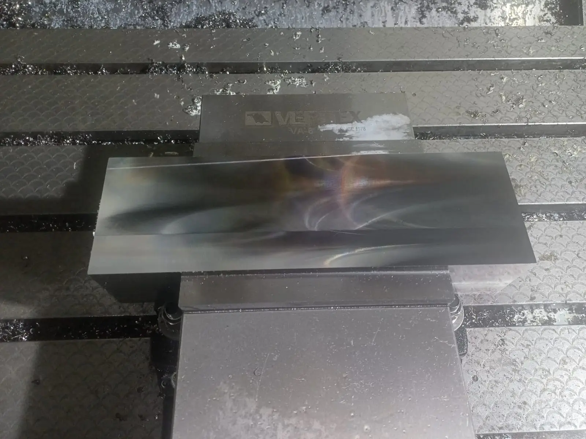

Diseño 2D y 3D de Dispositivos
Modelado tridimensional y desarrollo de planos técnicos para herramentales y mecanismos. Aseguramos la viabilidad funcional, la ergonomía y la precisión geométrica de cada dispositivo antes de iniciar su fabricación.
